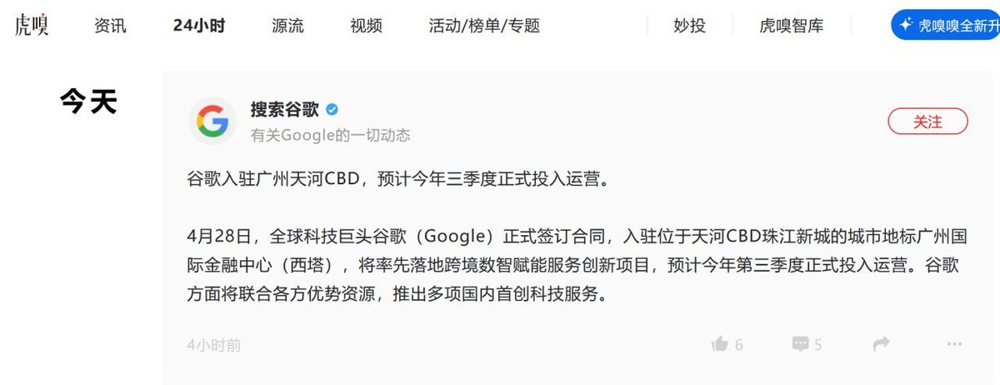

4月29日，据广州市天河区投资服务中心官方公众号“投资天河”发布消息，科技巨头谷歌已于28日正式签订合同，入驻位于天河CBD珠江新城的城市地标广州国际金融中心（西塔），将率先落地跨境数智赋能服务创新项目，预计今年第三季度正式投入运营。谷歌方面将联合各方优势资源，推出多项创新科技服务。
据了解，谷歌将在广州天河整合全球领先的科技资源，为内地跨境电商企业提供近距离的海外精准营销、国际化品牌打造、数字化技术赋能、全球流量对接等全链条服务，谷歌依托其在全球领先的科技实力，不仅可帮助企业降低出海成本、提升运营效率，推动“中国制造”加速向“中国品牌”转型，更将在广州国际级CBD核心区——珠江新城加速一批跨境数智服务企业集聚，形成新的出海生态。

据了解，谷歌将在广州天河整合全球领先的科技资源，为内地跨境电商企业提供近距离的海外精准营销、国际化品牌打造、数字化技术赋能、全球流量对接等全链条服务，谷歌依托其在全球领先的科技实力，不仅可帮助企业降低出海成本、提升运营效率，推动“中国制造”加速向“中国品牌”转型，更将在广州国际级CBD核心区——珠江新城加速一批跨境数智服务企业集聚，形成新的出海生态。

据羊城晚报报道，谷歌落地广州，入驻位于天河 CBD 珠江新城地标广州国际金融中心（西塔）
将率先落地跨境数智赋能服务创新项目，主打跨境电商业务，预计今年 Q3 正式投入运营
谷歌方面将联合各方优势资源，推出多项国内首创科技服务 https://t.co/823W7ty6Ap
将率先落地跨境数智赋能服务创新项目，主打跨境电商业务，预计今年 Q3 正式投入运营
谷歌方面将联合各方优势资源，推出多项国内首创科技服务 https://t.co/823W7ty6Ap